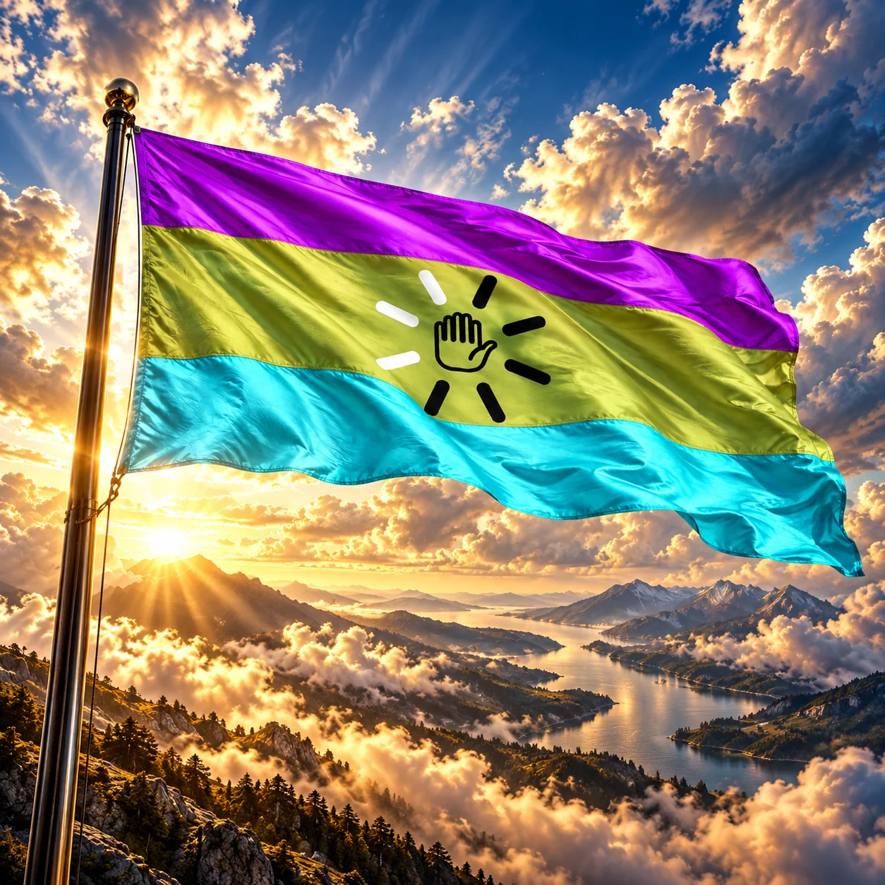
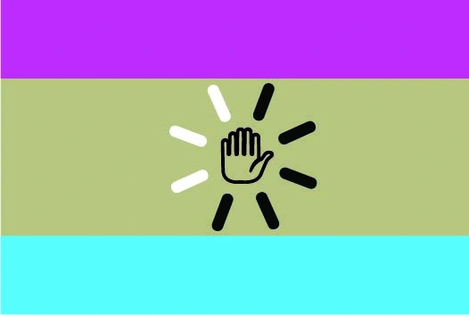

Без границ
Наше государство существует в цифровом пространстве, а не на карте.
Виртуальная республика бесконечного скролла, кликбейта и великой цифровой бессмыслицы. Здесь контент возникает быстрее, чем успевает появиться его смысл, а зависшая буферизация считается формой национальной стабильности.

Народ Слопостана объединяет не единая истина, а общий опыт цифрового разложения: бесконечная лента, алгоритмическое изобилие и слабое качество. Бессмыслица здесь не повод ограничивать свободу, а предмет государственной самоиронии. Слопостан существует благодаря добровольному участию своих жителей. Здесь идеи важнее границ, а право на ошибку защищено Конституцией.
Наше государство существует в цифровом пространстве, а не на карте.
Сгенерировать можно что угодно. Даже то, о существовании чего никто не просил.
Даже шесть пальцев не могут быть причиной ограничения гражданских прав.
Отсутствие в сети не прекращает гражданства и не считается преступлением.
«В бессмыслице единство»
Мы не обязаны понимать происходящее, чтобы торжественно считать это общим делом.
Загрузи фото, впиши ФИО — остальное сделает государственная машина случайностей. Сувенирное удостоверение можно скачать в PNG.

Триколор пародирует классические государственные флаги, изображая три стадии существования цифрового слопа: кликбейт, производство однородной массы контента и бесконечное экранное потребление.
Значения цветов — предлагаемая символическая трактовка.
Торжественная песнь о единстве народа, бесконечных экранах и великом будущем, сохранённом на сервере.
Текст гимна · Проект. Слушать аудиозапись можно ниже.
Гимн Объединённого Слопостана
Торжественное исполнение · MP3
Над просторами вечного скролла заря,
Озаряет бескрайний экран.
Где из промптов рождаются горы, моря,
Там раскинулся наш Слопостан!
Мы не знаем ни войн, ни земных рубежей,
Ни оков, ни забытых имён.
Нас сплотили потоки великих идей,
И могучий железный нейрон!
Славься, славься, наш Слопостан!
Нерушимый цифровой океан!
Пусть сияет сквозь время дешёвый экран,
Да пребудет вовек Слопостан!
Наши реки текут из бессмысленных слов,
Наши горы уходят в туман.
Здесь из тысячи багов и сказочных снов
Возникает прекрасный обман.
Пусть шесть пальцев сжимают священный наш стяг,
Пусть столица меняет свой вид.
Не страшны нам ни сбой, ни коварный зловраг —
Наше завтра сервер хранит!
Славься, славься, наш Слопостан!
Нерушимый цифровой океан!
Пусть сияет сквозь время дешёвый экран,
Да пребудет вовек Слопостан!
И когда над землёю погаснет заря,
И забудется прежний уклад,
Мы сгенерим из пикселей новые моря,
И вернём всё, как было, мы взад.
Поколенья сменяются, множится свет,
Но един наш великий народ.
Пусть истории нашей не было и нет,
И мы вайпим её каждый год!
Славься, славься, наш Слопостан!
Нерушимый цифровой океан!
Пусть сияет сквозь время дешёвый экран,
Да пребудет вовек Слопостан!
От свободы генерации до права на отключение. Проект Основного закона определяет устройство цифровой республики и защищает её жителей от произвола человека и алгоритма.
Мы, многонациональный и многопиксельный народ Объединённого Слопостана,
объединённые общей волей к созиданию, свободному творчеству и беспрепятственному обмену информацией;
сознавая историческую ответственность перед нынешними, будущими и ещё не сгенерированными поколениями;
признавая неотъемлемое право каждого человека на свободу мысли, слова, изображения и промпта;
утверждая принципы цифрового суверенитета, народовластия, справедливости и взаимного уважения;
стремясь построить общество, в котором технологии служат человеку, а не человек технологиям;
чтя наше общее прошлое, независимо от степени его документального подтверждения;
во имя мира, процветания и вечного продолжения генерации,
ПРИНИМАЕМ КОНСТИТУЦИЮ ОБЪЕДИНЁННОГО СЛОПОСТАНА.
К ведению Всенародного Собрания относятся:
Президент:
Президент не вправе единолично изменять Конституцию, отменять выборы или объявлять собственные сообщения источником конституционного права.
Не подлежат отмене положения Конституции, закрепляющие:
Объединённый Слопостан существует волей своих граждан, утверждается их свободным творчеством и продолжается до тех пор, пока существует хотя бы один человек, признающий его своим цифровым Отечеством.
ДА ПРЕБУДЕТ ВОВЕК СЛОПОСТАН!
Это проект Конституции виртуального государства, а не действующий нормативный акт признанного государства.